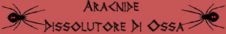
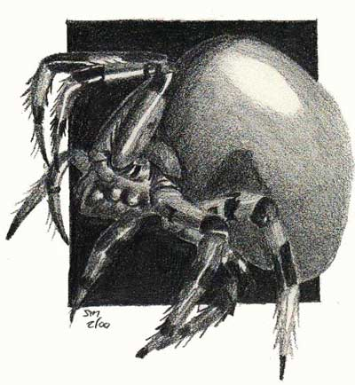

|
 |
Ambiente/Habitat | Paludi, Acquitrini e Sotterranei Umidi |
| Frequenza | Rare | |
| Organizzazione | Solitary | |
| Periodo di Attività | Qualsiasi | |
| Dieta | Carnivora | |
| Intelligenza | Low intelligence (5-7) | |
| Punti Combattimento | 7 Punti Combattimento | |
| Tesoro | Vedi Sotto | |
| Allineamento Dominante | Caotico Malvagio | |
| Numero di Apparizione | 1 | |
| Classe Armatura | 3 [10 base, -6 corazza, -1 destrezza] | |
| Movimento | 10 esagoni | |
| Dadi Vita | 4 (+5 punti ferita) | |
| Thac0 | 15 | |
| Numero di Attacchi | Morso | |
| Danni | 1d8+1 (Taglio) | |
| Poteri Offensivi | Istinto Predatorio; Spruzzo Acido; |
|
| Poteri Difensivi |
Robustezza Superiore
(+5 punti ferita); Resistenza Superiore all'Acido; |
|
| Poteri Generici | Camminata Acquatica; | |
| Vulnerabilità | Nessuna; | |
| Resistenza alla Magia | Nessuna; | |
| Sensi | Vista Comune; Sensi Superiori; | |
| Dimensioni | Medium (2 m. diametro) | |
| Morale | Elite (14) | |
| Valore in Punti Esperienza | 416 |
| MODIFICATORI AI TIRI SALVEZZA | |||||||||||||||||||||||
| COR | 0 | 49 | ENV | 0 | 55 | MAG | 0 | 62 | MAL | 0 | 47 | MEN | 0 | 60 | RIF | 0 | 54 | ROB | 0 | 53 | VEL | 0 | 49 |
Descrizione
L'Aracnide Dissolutore di Ossa è un pericoloso predatore riconoscibile per il suo addome dalla caratteristica forma a "serbatoio". Il suo lucido e resistente carapace è di color avorio mentre le zampe e la testa sono ricoperte da peluria nera.
Combat
L'Aracnide Dissolutore
di Ossa non è un cacciatore sedentario, bensì si aggira nelle paludi o nelle
grotte umide a caccia della propria preda. Il suo addome funge anche da
serbatoio per la produzione di un forte acido che il ragno può utilizzare
spruzzandolo con il seguente attacco speciale.
ISTINTO PREDATORIO
(Lesser Special
Ability):
La creatura possiede un forte
istinto predatorio, per tale motivo costei riceve un
bonus costante di +1 alla Thac0
con i suoi attacchi.
SPRUZZO ACIDO (Superior Special Ability): La creatura può spruzzare acido fino a 15 metri di distanza sulla propria vittima. Si tratta di un attacco, ad iniziativa +2, su una singola creatura la quale può provare a schivare il getto superando un tiro salvezza su riflessi. Se il tiro salvezza riesce la vittima non subirà alcun danno altrimenti sarà investita dal getto e subirà 3d6 danni da acido. Una volta effettuato lo spruzzo la creatura non può utilizzare questa abilità speciale nuovamente nei due rounds di combattimento immediatamente successivi.
RESISTENZA SUPERIORE ALL'ACIDO (Typical Ability): Il corpo della creatura è particolarmente resistente ai danni da acido, per tale motivo costei ridurrà del 50% (per eccesso) tutti i danni da acido sia di natura magica che naturale provocati nei suoi confronti. Inoltre, la creatura riceve un bonus di +3 a tutti i tiri salvezza debba effettuare per evitare o ridurre effetti provocati tramite l'acido.
RESISTENZA SUPERIORE ALL'ACQUA (Typical Ability): Il corpo della creatura è particolarmente resistente all'acqua, per tale motivo costei ridurrà del 50% (per eccesso) tutti i danni provocati attraverso l'utilizzo di acqua (anche se si tratta di danni di altra natura come ad esempio da botta) sia di natura magica che naturale provocati nei suoi confronti. Inoltre, la creatura riceve un bonus di +3 a tutti i tiri salvezza debba effettuare per evitare o ridurre effetti provocati tramite l'acqua.
ROBUSTEZZA
SUPERIORE
(Typical Ability):
Il fisico di questa creatura è estremamente robusto conferendole una
robustezza superiore
che le garantisce
5
punti ferita supplementari.
Habitat/Society
L'Aracnide Dissolutore di Ossa è una creatura solitaria ed estremamente malvagia. Tranne per il breve incontro d'accoppiamento vive assolutamente da sola ed è dedita al cannibalismo. Non tollera, infatti, l'invasione di altri ragni della stessa specie nel suo territorio.
Ecology
L'Aracnide Dissolutore di Ossa è una pericoloso predatore che non di rado attacca creature più grandi per cibarsi della loro carne e delle loro ossa. Secernendo una piccola quantità di acido durante il pasto è in grado di sciogliere le ossa della vittima facendole divenire una poltiglia liquida commestibile. E' proprio da questa capacità che questo ragno ha preso il suo nome. Data la sua intelligenza è in grado di discernere i nemici in base alla loro pericolosità e di cambiare bersaglio se necessario. Solitamente, se attaccato da più creature, una volta uccisa o catturata la prima non attaccherà le altre ma si limiterà a difendersi dando l'occasione agli altri di allontanarsi, qualora questo non lo facciano, però, si opererà per eliminare il pericolo.
Tesoro
L'Aracnide Dissolutore di Ossa distrugge quasi tutti gli oggetti posseduti dalle vittime con il proprio acido, inoltre, spostandosi spesso non accumula ricchezze. Per questo motivo vi è solo il 5% che una volta ucciso quest'essere nei dintorni possano ritrovarsi resti delle vittime contenenti un tesoro non dissolto. Se ciò avviene si consideri il ritrovamento di: (01-75) 1d4 Gemme; (76-100) 1 Oggetto magico ad eccezione di pozioni, di pergamene, di vestiario od altri oggetti in tessuto o cuoio.
Mystical Resource Sourge
(Carapace) Quantità: 1, Presenza 33% - Effetto Particolare:
Resistenza all'Acido
- Qualità della Risorsa:
Common.
Mystical Resource Sourge
(Ghiandola Acida) Quantità: 1, Presenza 33% - Effetto Particolare:
Acido
- Qualità della Risorsa:
Common.